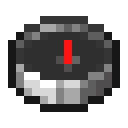

Ruins
The people who lived here before left their places behind: towers along the old roads, farms on the ridges, houses on the marshes, slips on the shores, and stranger halls. Every kind of ruin is rare, some rarer than others, and each stands only in the land that suits it, where the ground is near level: it takes travel to come across one, and a Wayfinder to find one on purpose. Places of a kind were built a few different ways, and the years have worn each its own way.
Finding them
A Wayfinder leads to ruins the archive has told you of. Use it to choose a kind to look for: it lists the relay towers, which everyone knows of, and every kind a shard you have read tells of; read a shard, by using it, and the places it writes about join the list. Its needle spins while it looks, longer the farther the nearest one lies, then points to the nearest ruin of that kind within 10,000 blocks; while you hold it, it says how far that is.
 Crafting
Crafting



Relay towers
Stone towers, the tallest thing for half a day's walk: a base buttressed at the corners, the shaft set back above it and banded at each floor, and three rooms one over another, the store, the kitchen with its stove and the keeper's room, with a ladder up the north wall. At the top a walk on corbels, railed, with the bell that calls for coal, goes round the lamp room of glass in a copper frame, its great lamp of glass and redstone under a flared roof of copper gone green. At the tower's foot stands the relay house: stone below and a spruce frame above, the keeper's desk with the tower book on its lectern, and the stand where a big mind stood, ringed by accelerators in their cooling water. Some towers have lost their tops. In grassland, forest, taiga, snow and hills, at most one in each region 48 chunks across.
Waymarks
Stone pillars on stepped bases by stretches of the old road, a figure cut in the middle stone, a torch on top, little stones left at the foot and an arrow to the nearest inn; the ring where walkers made their fire, with a bench and a trough. Some pillars have fallen into the grass; one in six stands under a little roof with notes left on it. The commonest ruin: at most one in each region 24 chunks across.
Three Wells
A market town's square where two roads cross like an X: paving round three wells under their little roofs, a lamp at every corner, the bell at the crossing, the notice board with the market rules, stalls under wool awnings, benches under two trees, the bakery with its oven built out on the side, the school house by the east well with its painted door and its bell on the roof, and a stretch of the town wall. On plains, meadows and savannas, the rarest of the towns' ruins: at most one in each region 80 chunks across.
Inns
The inns of the Long Road, a day apart, the Halfway Inn and the Brown Hen: a timber frame on a stone footing (the Brown Hen's ground floor all stone), the upper floor jutting over the road on corbels, shuttered windows, two dormers and the chimney stack up the gable. Inside, the hearth still burns; the boards hang by the fire, the book lies behind the counter next to a pie, and the beds wait upstairs; a woodshed stands at the back, the stable across the yard with its roof part fallen, and the inn's sign by the road. At most one in each region 64 chunks across.
Windmill farms
The farms of the ridges: a windmill with a stone base and a boarded body, a railed stage round it and its tally board by the door, the barn with its hayloft and hoist, the pig pen and the hen house, a well in the yard, and three fields, wheat, beetroot, and potatoes and carrots, each with its ditch, its hedge and its scarecrow or hives. On plains, meadows, savannas and windswept hills, at most one in each region 56 chunks across.
Watermills
The mills of the orchard country, of birch and glass on a stone footing at the edge of a pond: the wheel out over the water on its axle, the millstone under its hopper inside, a race of stone beside it with the sluice nobody may open and a footbridge with a loose plank, the notices on the gate, a bench on the far side, old apple trees and hives among the flowers. Only by water deep enough, the wheel toward it: at most one in each region 56 chunks across.
Stilt houses
Houses of mud brick on decks over the marsh, their stilts down to the marsh floor, a boardwalk to the bank. A healer's house keeps its high shelves of labeled jars, the remedies on the bench, beds for the sick and her day book; a boat house keeps the day's catch and the tally on its wall. In swamps and mangrove swamps, at most one in each region 48 chunks across.
Slipways
A buttressed stone quay with steps down to the water, the shipwright's shed with its window for mending nets, the wood store and the fish market's price board; running out over the sea on posts, the frame of a ship never finished with a crane leaning over it, and beside it a ramp of stone into the water. Some frames are a big ship's, three times as long as any boat. Only where a beach or a stony shore meets deep enough water, the slip toward the sea: at most one in each region 40 chunks across.
Tutor houses
Halls of tuff between pillars, two tiers of tall windows under a cornice of copper, a relay on the roof, where minds were drilled and tested. Apprentices still stand in their row before the tutor's Bench; the teaching room keeps its tray of crystals, each on its card, in the light of its bay window; the apprentice hall across the yard keeps its dry box; and the drill yard, ringed with torches, has its boards drawn as small fields. In grassland, forest, taiga, savanna and cherry groves, at most one in each region 72 chunks across.
The Archive at Vell
Where everything was kept, dug into its hill. Its front faces the town: pillars of tuff, the portal under the first keepers' words, a broad flight of steps, the copying room's big window and the reading room's, where a lamp still burns on the long table; behind the front everything is under turf, and light wells of glass come up through the grass. A great stair goes down into the hill to the front hall and the finding book, the halls of shelves under their light wells, a stack sealed with clay, and the deepest room, where the oldest record is kept. At most one in each region 160 chunks across.
The Deep Works
A great mine in the hills. At the shaft head stand the headframe and its wheel, the board where miners wrote their names and rubbed them out coming up, the tool store and the sorting bins. A ladder goes down the shaft past a level of copper, a level of iron and coal with an amethyst hollow behind a door, and the deep stone, where an old tunnel was walled up; at the ninth level the gate is locked, and an old side door above it leads down another way. In windswept hills, meadows and savanna plateaus, at most one in each region 128 chunks across.
Fallen relay masts
Where a relay mast fell it broke a bowl in the ground, grassed over at the rim. The mast lies across it in three pieces of green copper, its relay half buried at the far end, stone thrown up round it; along the rim the keepers put a rope of chain on posts, and their sign. Its drive housing split open: the chest inside holds Archive Drives already filled with the relays' writing. At most one in each region 40 chunks across.
Sealed stacks
Deep under the ground, with no way in but a wall of clay: a vaulted hall of the archive sealed in its last days, its shelves in bays behind folded doors with wax over them, boxes of records in waxed cloth down the middle, the sealing book on its lectern, and a lamp left on the long table; roots have come down through the vault. Their boxes hold filled Archive Drives. At most one in each region 64 chunks across.
Archive houses, relay masts and buried vaults
Small houses of calcite between pillars of tuff under roofs of deepslate tiles, one corner usually fallen in, that kept records; open masts of green copper on stepped tuff footings, an old relay still on top of most of them; and, under a lantern on a post beside a hatch, deep rooms with a bank of old accelerators and two chests, every one holding a salvaged model. At most one in each region 56 chunks across, the vaults 64.
What they hold
- Archive Shard: pieces of the archive, mostly of what was written about the place they lie in: a relay tower's shards are mostly its keepers' writing. See The Archive.
- Photomasks with salvaged designs: the Fabricator makes working but unfused machines from them, without a Bench. Linear layer, softmax and GELU masks turn up in houses, matrix multiply ones under the gravel, and attention, layer norm, feed-forward and transformer masks in vaults. See The Bench and the Fabricator.
- Schematic: Relays: the plans for relays, a pattern to copy that stays in the crafting grid. In relay towers, on masts and in vaults.
- What each place kept: coal and food in the towers, flour and seed on the farms, remedies in the marsh, timber and tools at the slips; Weight Crystal, blank Checkpoints and a little gold.
- Salvaged Model: see Salvaged Models.
Amethyst ShardCopper IngotCompassWayfinder